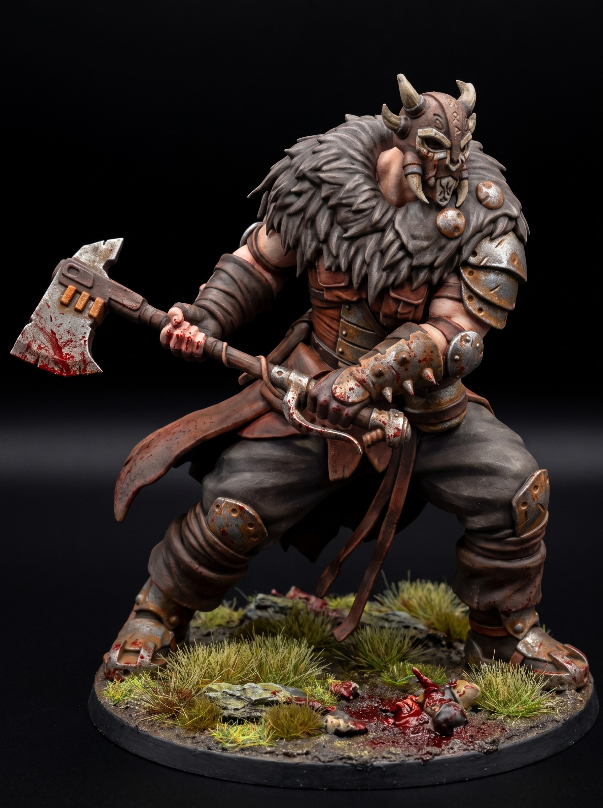

Painting Chipped Armor on 3D Printed Miniatures
August 28, 2026

Prime your 3D printed miniatures in solid matte black. Basecoat the armor plates with a dark metallic, keeping the deep recesses in shadow. Wash the entire surface in a dark brown tone to dull the factory shine. Let the wash dry completely before moving to the highlights.
Tear off a small piece of packing foam. Dab it into matte black paint and wipe most of it away on a paper towel. Stipple the foam lightly along the plate edges where battlefield wear happens naturally. Pick out the highest impact points with a bright silver using the side of your brush.
Thin an orange-brown acrylic into a transparent wash. Deposit small drops directly into the rivets, joints, and deep armor seams. Feather the lower edges with a damp brush to create realistic rust streaks. Gravity pulls moisture downward, so drag your brush in the same direction.
Keep your focal details clean to contrast the damaged metal plates. High contrast keeps your miniature painting sharp and readable across the gaming table. Finish with a coat of ultra-matte varnish to lock in the weathering.
Get free miniatures:
- Fantasy: https://cults3d.com/@BattleFoundry
- Scifi: https://cults3d.com/@BATTLEFOUNDRYSCIFI
- Grimdark: https://cults3d.com/@DREADWORKS
- Resin Statue: https://cults3d.com/@BlacksiteSyndicate